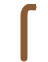
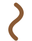
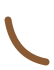

Ten thousand years ago a small wildcat started hanging around grain stores in the Fertile Crescent. It never quite agreed to be domesticated. This almanac covers what we do know: the numbers, the breeds, the age math, and what that tail is trying to say.
Move your pointer. Click to get a slow blink back.
About 24 more than you. Many are in the spine and tail, which is why they bend like that.
Each ear swivels up to 180° on its own, tracking two sounds at once.
The purr range. It runs on both the in-breath and the out-breath.
Asleep. Most of the rest is grooming, which takes up to half of waking time.
Ratings are rough tendencies. Individual cats ignore them freely.
The "multiply by seven" rule is wrong for cats. They grow up fast: a one-year-old cat is roughly 15 in human terms, and a two-year-old is about 24.
After that, each cat year adds about four human years. Indoor cats commonly live 13 to 17 years; the oldest on record, Creme Puff of Austin, Texas, reached 38.
The tail is the most honest part of a cat. Check it before you reach for a belly.

Friendly greeting. Often followed by a head bump.
Confident and pleased to see you.

Focused, irritated, or about to pounce. Give space.
Frightened. The cat is trying to look twice its size.

Anxious or unwell. Worth watching closely.